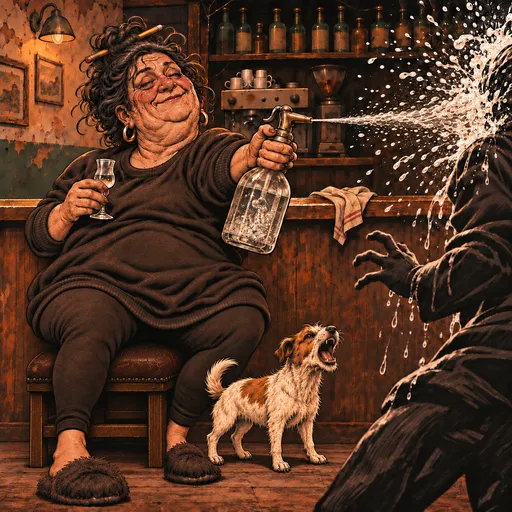

SB-32 · Piera e Grappino
Confronto a 252 e 60 px; clicca sulle immagini per vedere l’anteprima a 512 px.
Piera — personaggio
Precedente
Nuova variante
Piera — Seltz e Grappino
Precedente

Nuova variante